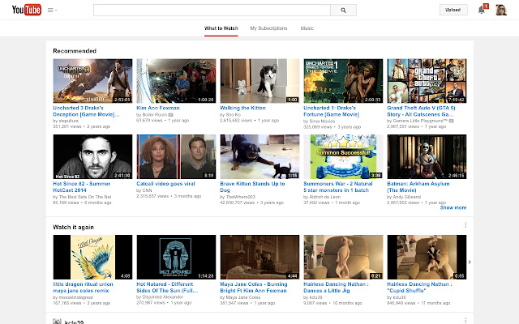
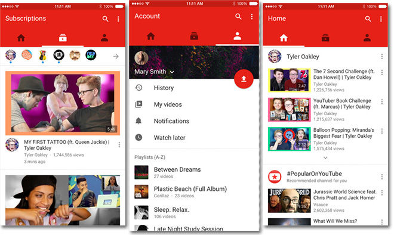
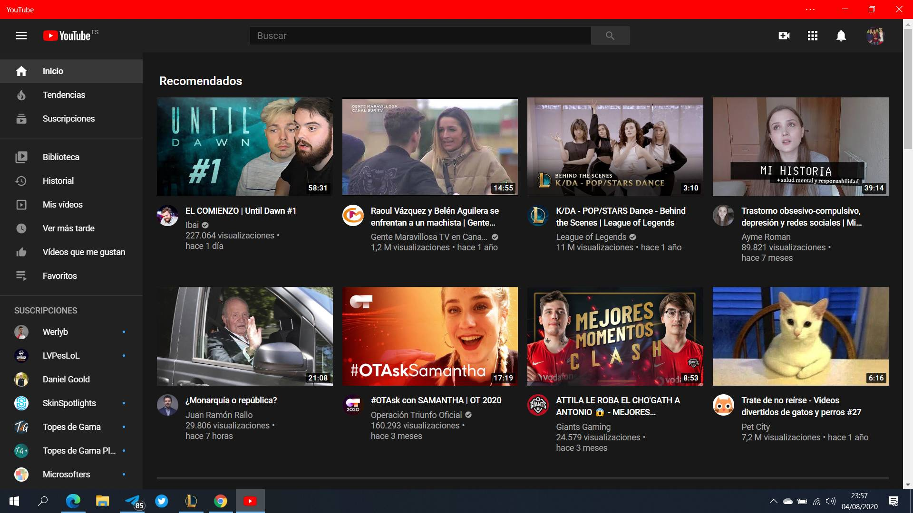
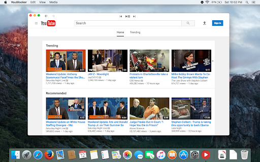

Youtube
www.youtube.com
16.41.36
Funcionalitats
YouTube es una plataforma de streaming en la qual els usuaris son els que comparteixen el contingut. Té tres funcions bàsiques, que estan des dels inicis que son: pujada i visualització de videos, interaccions socials (mitjançant una secció de subscripcions, comentaris i puntuació) i un navegador per cercar. Més tard van incloure els live streaming, que son vidéos reproduits en temps real mentres son gravats.
Captures
   Finançament
YouTube es una plataforma “gratuita” que es financia amb publicitat, pagues mensuals per funcions exclusives i emportant-se un % de les donacions que fan els usuaris als creadors de contingut.
Companyia
YouTube va ser creat per 3 empleats de PayPal en 2005 i va passar a ser propietat de Google Inc en 2006, la qual es una empresa que ofereix molts serveis en internet, dels quals el principal és el seu navegador.
Alternatives
Hi han diverses alternatives a YouTube, com poden ser: Dailymotion, que es practicament igual però amb menys formats de tamany per als videos; Twitch, que fa focus sobretot a l’apartat del live stream; PeerTube que es una plataforma descentralitzada que funciona amb el sistema p2p per reduir la càrrega dels servidors individuals; per ultim esta Vimeo que es com una versió de Youtube pero que cal pagar per mantenir el contingut en linea.
Valoració
Avantatges
És la plataforma més gran de vídeo actualment i per tant té una quantitat enorme de contingut de tota mena, per tant si buscas qualsevol cosa la trobaràs. Admet molts formats de tamany i video que es poden pujar. Pots guanyar diners amb el seu sistema de monetització si tens suficient audiencia.
Inconvenients
Al ser la plataforma de vídeo més gran està tot molt automatitzat i l’atenció del suport esta molt limitada, sorgeixen problemes que no es poden arreglar i el sistema de recomanacions no funciona bé del tot. La monetització del contingut actualment és molt pobre i ha derivat a que els vídeos tinguin títols i miniatures enganyosos. Hi han molts problemes amb les reclamacions de copyright degut a que youtube dona la rao al denunciant per defecte, fent que molts tipus de continguts perdin la monetització o inclus siguin borrats.